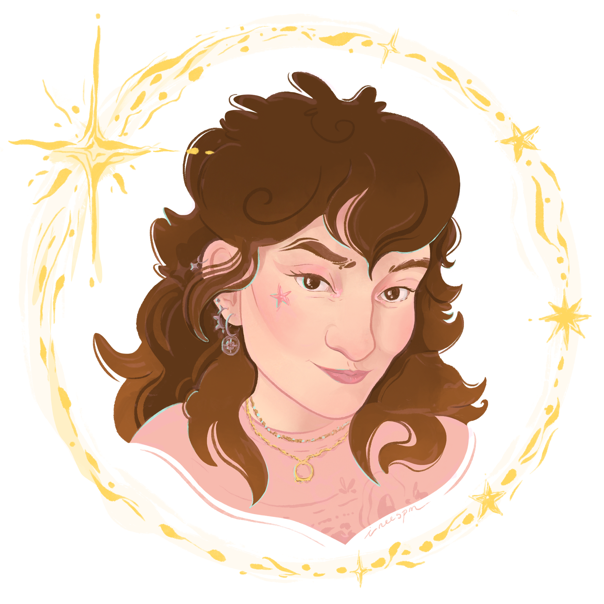
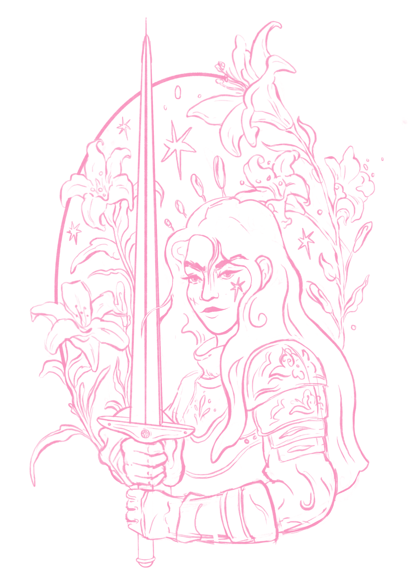

☆ About ☆

Hello! I’m Inés Palomero Méndez, and if you are reading this, you are exactly where you are supposed to be, because now, you know me. But, who am I?
I’m a young Spanish girl who has been painting all of her life. When I was just seven years old, I started going to art classes and kept doing it until my early twenties. I had to stop because in 2019, I became an art teacher myself. I still teach to young kids and teenagers. (2019–Ongoing).
In the meantime, I studied Fine Arts at Complutense University of Madrid (2018–2022), where my Final Project, called “Fuegos Fatuos”, aimed to be an Art Book of concept art (showcase in the work that a concept artist has to do in the early stages of an animated series).
Once I finished my career, I decided to continue my studies at ESDIP art school in Madrid where I studied Artistic, Graphic and Digital Creation (2022–2025).
My greatest passion is drawing and painting in traditional mediums, like gouache or oil, but I also really enjoy the advantages of digital art.
The themes that really move me are women, fantasy, nature and emotions. Other things that inspire me greatly are Impressionism and Gothic architecture. I love creating colorful pieces that include these elements.
